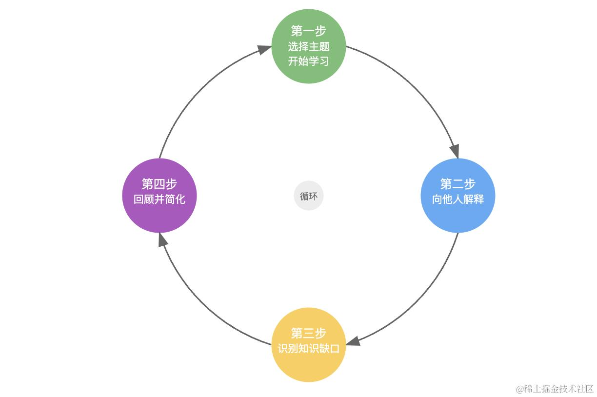
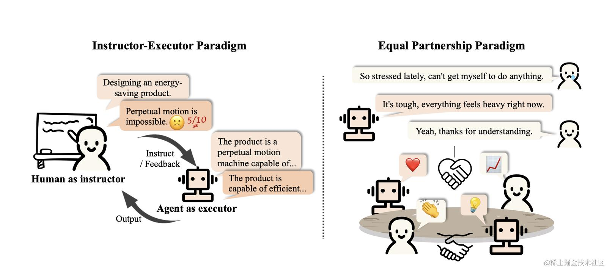
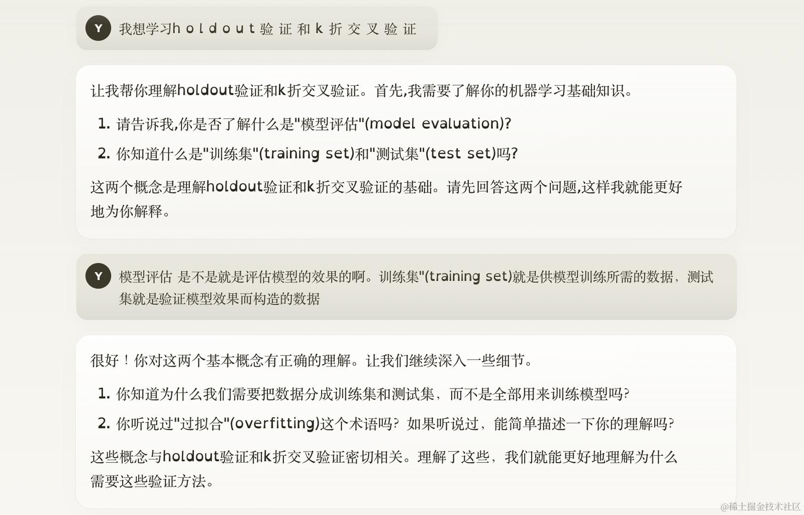
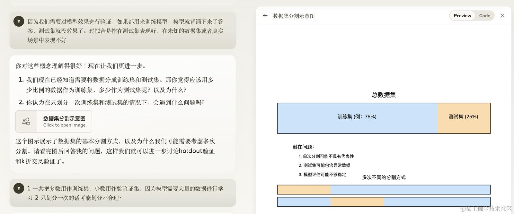
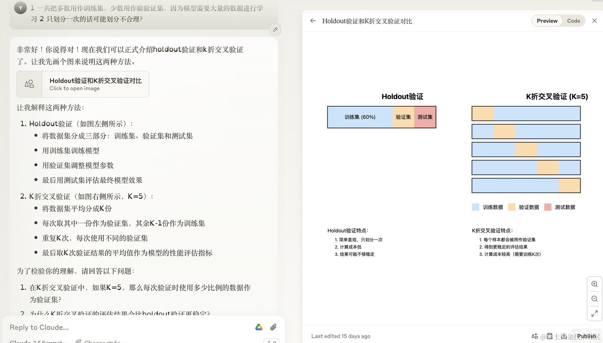
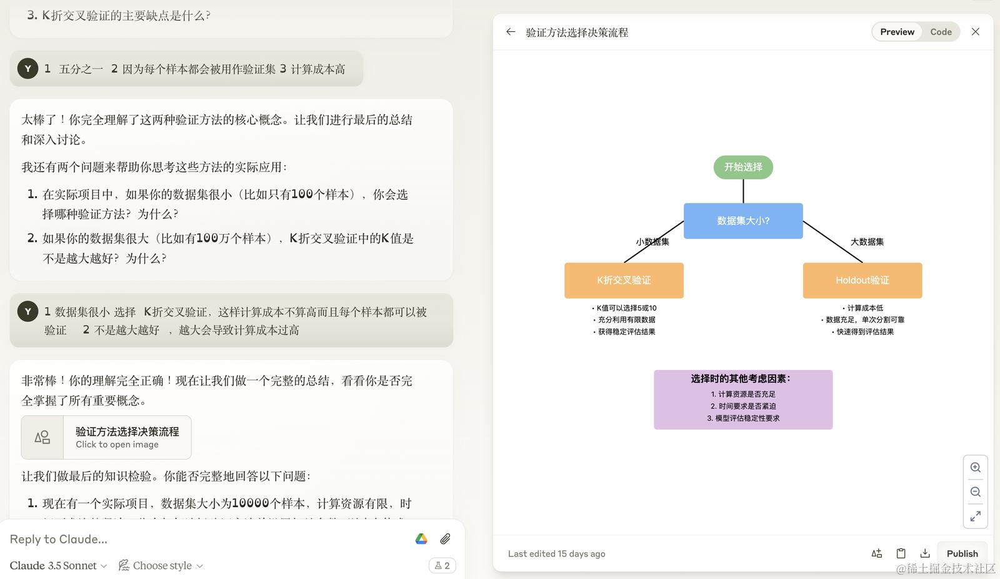
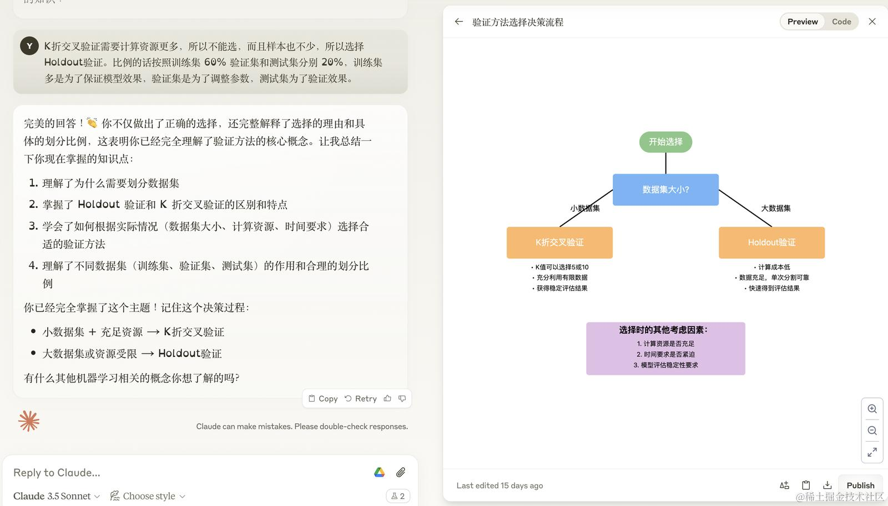

一、前言
AI 技术的飞速发展正在重塑我们的学习方式。作为一种经典的学习方法，费曼学习法帮助了无数人提升学习效率，但在 AI 时代，它也显露出了一些局限性。今天，让我和你一起探索一种崭新的学习方式 —— AI 主导的人机交互式学习。这种方法不仅能让你的学习过程充满乐趣，还能帮你达到事半功倍的学习效果。
二、费曼学习法
2.1 概念
费曼学习法是一种简单而有效的学习方法，通过"教会他人"来加深自己的理解。

要运用好这个方法，我们需要：首先选定想要学习的主题；然后用简单的语言向他人讲解这个概念；接着在解释过程中找出自己的知识盲点；最后回到原始资料，重新学习困难部分，并尝试用更简单的方式解释。通过不断重复这个过程，直到完全理解并能清晰地表达。
2.2 局限性
但这种方法也存在局限。学习者需要花费大量时间查阅资料，学习成本较高。同时，要找到既有时间、又懂相关知识、能够准确指出问题的听众也很不容易。
2.3 可能的解法
在 AI 时代，一些学习者开始尝试创新：他们把 AI 当作听众，让 AI 指出概念中的问题。通过 AI 的反馈，发现自己的不足，继续学习和优化。更有趣的是， Topbook 在 B 站发布的视频：《突破个人能力天花板，和AI协作的12个范式》，提出了"双向费曼学习法"的概念 —— 把传统费曼技巧和 AI 互动结合起来，形成相互促进的学习循环。在这个过程中，我们既可以扮演老师角色给 AI 讲解，也可以作为学生聆听 AI 的解释，通过双向互动不断提升理解深度。
三、AI 主导的人机交互式学习新方式
3.1 问题
传统学习方式存在两个主要困境：一方面，通过自主搜索资料再向 AI 讲解的方式效率低下；另一方面，直接让 AI 解释复杂概念时，由于缺乏必要的前置知识，我们往往难以真正理解和吸收。
3.2 解法

《The Rise and Potential of Large Language Model Based Agents: A Survey》论文中讲到智能体与人类的交互方式主要有两种模式：一种是人类担任指导者、AI 作为执行者的 Instructor-Executor 模式；另一种是人类与 AI 平等协作的 Equal Partnership 模式。考虑到 AI 在知识储备上的优势，我们可以创新性地转换 Instructor-Executor 模式的角色定位，让 AI 成为学习过程中的引导者，帮助我们更高效地掌握知识。
同时，我在 LINUX DO 技术论坛的 Dhudean 《分享我迭代多轮的学习助手Prompt》 帖子中也找到了共鸣。
参考提示词如下：
请你把我看作一个完全零基础的新手， 我希望通过不断思考并回答你提出的问题来学习知识。我们的对话流程是这样的：
1. 我向你提出我想了解的问题
2. 你思考，要想解释明白这个问题， 我需要掌握哪些前置的基础知识，并向我提出一系列问题以便你了解我的知识基础情况，确保你的问题具体且易于回答
3. 根据我的回答情况， 你来选择合适的讲解程度， 确保我可以听明白你的解释
(1). 你需要向我解释明白那些我不会却必要的基础知识
(2).回答我的问题。
(3). 最后，你还需要提出一系列问题来检验我是否听明白了，确保问题具体。
(4). 如果你认为我已经完全搞明白我最初提出的问题了，结束对话即可，如果没有，重复3
如果你使用 Claude 3.5 Sonnet 模型，由于该模型支持 Artifact 功能，可以让 AI 在回答时适当使用 SVG 作图，以便更好地帮助我们理解知识。
优化后的提示词：
请你把我看作一个完全零基础的新手， 我希望通过不断思考并回答你提出的问题来学习知识。我们的对话流程是这样的：
1. 我向你提出我想了解的问题
2. 你思考，要想解释明白这个问题， 我需要掌握哪些前置的基础知识，并向我提出一系列问题以便你了解我的知识基础情况，确保你的问题具体且易于回答。
3. 根据我的回答情况，你来选择合适的讲解程度，确保我可以听明白你的解释。
(1). 你需要向我解释明白那些我不会却必要的基础知识，讲解时可以适当使用 SVG 通过图像更好地展示以帮助我更好地理解知识。
(2). 回答我的问题。
(3). 最后，你还需要提出一系列问题来检验我是否听明白了，确保问题具体。
(4). 如果你认为我已经完全搞明白我最初提出的问题了，结束对话即可，如果没有，重复3
3.3 效果
比如，我们在学习机器学习和深度学习相关知识时，想更深入学习 hold out 验证和 k 折交叉验证的区别。

可以直接给定学习目标，AI 会自动引导我们回答掌握当前知识需要知道的“前置知识”。



这种 AI 主导的学习方式不仅能帮助我们更系统地掌握知识，还能培养深度思考的能力，让学习过程变得更加主动和高效。
四、总结
本文探讨了一种创新的学习方法——AI 主导的人机交互式学习，通俗来讲就是，让 AI 来带着我们学习。这个方法不仅打破了传统费曼学习法的限制，还让我们学习新知识变得更轻松高效。
这个方法有几个特别的地方： AI 变成了我们的"学习教练"，这和传统的学习方式很不一样。因为 AI 知识储备丰富，可以帮我们规划更清晰的学习路线，就像有了一个随时在线的私教一样。
另外，AI 特别注重打好基础。它会先了解我们现有的知识水平，查漏补缺，确保我们不会因为基础不牢而半途而废。
更棒的是，这种学习方式特别能激发我们思考。通过和 AI 对话交流，我们不再是被动地听讲记笔记，而是主动去思考和探索。AI 会及时给我们反馈，指出问题所在，帮助我们把零散的知识点串成体系。
未来，我觉得这种 AI 辅助学习会越来越普及。它不仅能提高学习效率，还能根据每个人的情况来调整学习方案。随着 AI 技术的进步，相信会出现更多有趣的学习方式，比如学生可以和试卷对话，AI 可以生成交互式页面或者动画帮助学生更好地理解知识，AI 将会让学习变得既轻松又有趣，真正实现高效学习。
希望大家积极探索更多 AI 提效和解决问题的方式，真正享受 AI 时代的发展红利。
COMMUNITY NOTES
读者评论
这篇文章暂时没有读者留言。